<ion-fab>
<lib-ionic-pullup (onExpand)="footerExpanded()" (onCollapse)="footerCollapsed()" [(state)]="footerState">

<ion-toolbar id="ionDragFooter" (click)="toggleFooter()" #ionDragFooter>
  <ion-title><ion-button id="pullup-bar"></ion-button></ion-title>
</ion-toolbar>

<ion-button id='setPOIasStart' size='small' style="display:none;">Set Starting Point</ion-button>
<ion-button id='setPOIasDest' size='small' style="display:none;">Set Destination</ion-button>


<ion-content>
    <ion-content>
      <ion-list>
        <ion-button expand="block" (click)="presentBusModal()" id="shuttle-button">
          <ion-icon name="time"></ion-icon>
          Shuttle Schedule
        </ion-button>
        <ion-button expand="block" (click)="presentAppSettingsModal()" id="settings-button">
          <ion-icon name="settings"></ion-icon>
          App Settings
        </ion-button>
        
      </ion-list>
      <!-- FAVORITES -->
      <ion-card>
        <ion-card-header>
          <ion-card-title>Next Class</ion-card-title>
        </ion-card-header>
        <ion-card-content>
          <ion-grid>
            <ion-button expand="block" (click)="presentQueuedRouteModal()">Queued Routes</ion-button>
          </ion-grid>
        </ion-card-content>
      </ion-card>

      <!-- NEAR ME -->

      <ion-item>
        <ion-label>Near me</ion-label>
        <ion-input></ion-input>
      </ion-item>
      <ion-card>
        <ion-card-content style="text-align:center;">
          <div class="near-me-icon-container">
            <ion-fab-button (click)="showNearMe('restaurant')" color="secondary" class="near-me-icon">
              
            </ion-fab-button>
            <div class="near-me-label">Restaurants</div>
          </div>
          <div class="near-me-icon-container">
            <ion-fab-button (click)="showNearMe('bank')" color="secondary" class="near-me-icon">
              
            </ion-fab-button>
            <div class="near-me-label">Banks</div>
          </div>
          <div class="near-me-icon-container">
            <ion-fab-button (click)="showNearMe('bar')" color="secondary" class="near-me-icon">
              
            </ion-fab-button>
            <div class="near-me-label">Bars</div>
          </div>
          <div class="near-me-icon-container">
            <ion-fab-button (click)="showNearMe('park')" color="secondary" class="near-me-icon">
              
            </ion-fab-button>
            <div class="near-me-label">Parks</div>
          </div>
        </ion-card-content>
      </ion-card>
    </ion-content>
  </ion-content>

</lib-ionic-pullup>
</ion-fab>
